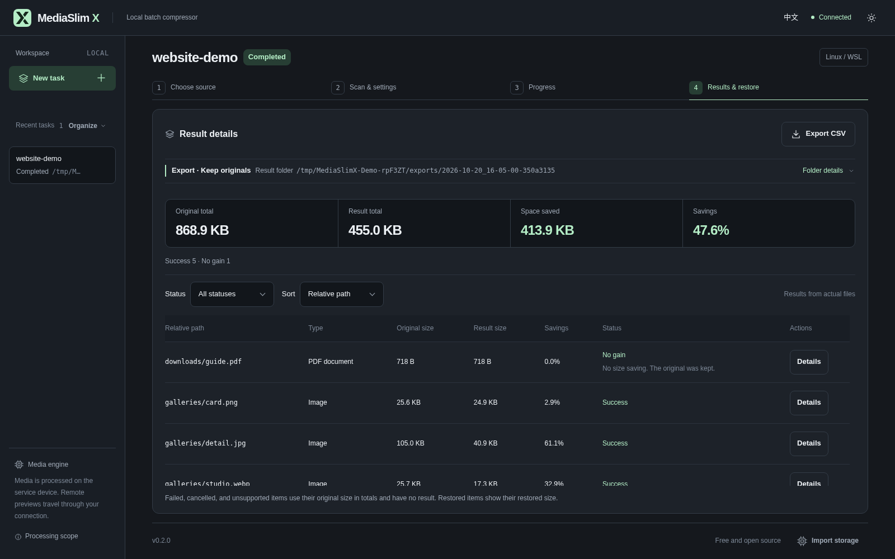

<!doctype html>
<html lang="en"><meta charset="utf-8"><meta name="viewport" content="width=1200">
<title>MediaSlim X — Batch compressor</title>
<style>
*{box-sizing:border-box}html,body{margin:0;width:1200px;height:630px;overflow:hidden;background:#15181D;color:#EDF1F5;font-family:"Segoe UI Variable","Segoe UI","Microsoft YaHei UI","Noto Sans CJK SC",system-ui,sans-serif}
.cover{width:100%;height:100%;position:relative;padding:44px 48px}
.brand{display:flex;align-items:center;gap:3px;font-weight:600;font-size:22px;letter-spacing:-.7px}
.brand svg{width:25px;height:25px;flex-shrink:0}
.descriptor{position:absolute;right:48px;top:57px;color:#A0AAB7;font-size:13px;letter-spacing:1.2px}
.intro{position:absolute;left:48px;top:218px;width:385px}
h1{font-size:52px;line-height:1.08;font-weight:600;letter-spacing:-2.4px;margin:0 0 24px;text-wrap:balance;white-space:normal}
.formats{font-size:18px;line-height:1.6;color:#B4EDC6;white-space:nowrap;margin:0 0 21px}
.detail{font-size:16px;color:#A0AAB7;line-height:1.75;margin:0;white-space:nowrap}
.screen{position:absolute;right:48px;top:94px;width:685px;margin:0}
.screen img{display:block;width:100%;height:auto;border:1px solid #333C47;border-radius:12px}
.screen figcaption{color:#A0AAB7;font-size:12px;line-height:1.75;text-align:right;margin-top:11px}
.footer{position:absolute;left:48px;right:48px;bottom:28px;border-top:1px solid #333C47;padding-top:15px;display:flex;justify-content:space-between;color:#A0AAB7;font-size:12px;letter-spacing:.4px}
.footer .identity{color:#EDF1F5}
</style>
<main class="cover">
  <div class="brand" aria-label="MediaSlim X"><span>MediaSlim</span><svg xmlns="http://www.w3.org/2000/svg" viewBox="0 0 64 64" aria-hidden="true"><title>MediaSlim X</title><g fill="#B4EDC6"><path transform="translate(4 5) scale(.254545 .257143) translate(-200 0)" d="M200,0L280,105L200,210L260,210L340,105L260,0L200,0Z"/><path transform="translate(4 5) scale(.254545 .257143) translate(-200 0)" fill-rule="evenodd" d="M352.5,88.59375L420,0L360,0L322.5,49.21875L352.5,88.59375Z M352.5,121.40625L420,210L360,210L322.5,160.78125L352.5,121.40625Z M292.5,121.40625L280,105L292.5,88.59375L305,105L292.5,121.40625Z"/></g></svg>
</div>
  <div class="descriptor">LOCAL MEDIA WORKBENCH</div>
  <section class="intro"><h1>Batch<br>compressor</h1><p class="formats">Images · MP4 · PDF</p><p class="detail">Processed locally<br>Export by default. Keep originals.</p></section>
  <figure class="screen"><figcaption>Synthetic demo media · Actual interface</figcaption></figure>
  <footer class="footer"><span>FREE & OPEN SOURCE / LOCAL PROCESSING</span><span class="identity">MediaSlim X</span></footer>
</main></html>